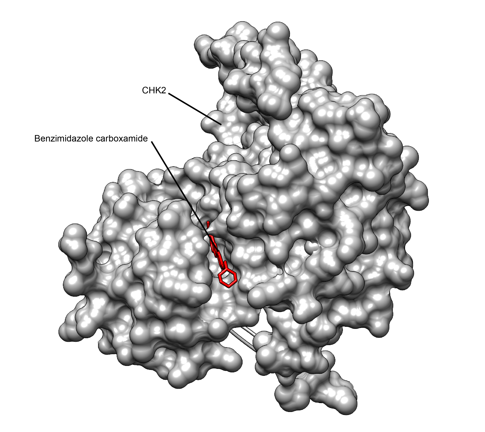

Executive Summary
Among the last assets a drug company will part with are the structures that record how a protein and a candidate molecule lock together. Those files show which molecule was tried against which site. In September, Nature reported that five companies had put exactly that kind of data to work training a single shared model. This article looks at what the companies gave up and what they held on to, and at what had to be brought into line before any of it could be combined.
The model finished training on 20,167 structures that had never been released, and on a held-out test set it drew the contact between protein and drug at high quality for 52.1% of structures. A model of the same family trained on public databases alone managed 35.6%. The more striking comparison sits elsewhere: no model fine-tuned on any single one of the five companies' datasets came out ahead of the combined one. These numbers have not been through peer review, and the only source for them is a technical report posted on the blog of the company that ran the federation.
Sections 1 through 4 follow the public record. What happened, how the data was combined without moving it, how far the numbers reach, and what is still closed all sit there. Section 5 is this article's own reading of the episode, which asks whether the data was in a state that could be combined at all.
Key Figures
Source: Apheris technical report. Only the context line on the first card comes from the Nature story.
20,167
private structures used in training
Public databases may hold only about 10,000 structures bound to a drug-like molecule, an executive at one participating company told Nature
35.6% → 52.1%
share of structures whose contact zone was drawn at high quality
A model of the same family trained on public data alone against the combined model, on the same test set
1,056
held-out structures used for scoring
Each company set aside 5% of its own structures, and every structure from a given project went entirely to one side
0
original structures that left a company
Only trained model parameters reached the center; the structure files themselves never left each company's environment
Five Competitors Trained One Model
The news Nature carried in September centers on an industry group called the AI Structural Biology Network, or AISB. Nature named AbbVie, Astex and several other drug companies among those that formed the collaboration, and five of them contributed structures to this particular training run. By the list that Apheris, the German company that builds the federated infrastructure, has made public, they are AbbVie, Johnson & Johnson, Astex, Bristol Myers Squibb and Takeda. The first two started in March 2025, and the other three joined that October.
OpenFold3 is the model on the receiving end. Mohammed AlQuraishi's lab at Columbia University rebuilt Google DeepMind's AlphaFold3 as open source, and the model predicts the shape a protein and a candidate drug molecule take when the two meet. Until now this family of models has learned from the Protein Data Bank, the public archive of experimentally determined structures, which holds more than 200,000 of them.

The trouble is what those 200,000 consist of. Paul Mortenson, vice-president for computational chemistry and informatics at Astex Pharmaceuticals, told Nature that the PDB may hold just 10,000 structures caught in the act of binding a drug-like molecule. That 10,000 is precisely the situation drug research wants to know about, while most of the material the model learns from is some other kind of structure. An evaluation by researchers at the University of Basel, published in May in the journal Nature Structural & Molecular Biology, found that accuracy for this family of models falls off a cliff once a molecule looks very unlike anything in training, and Nature footnoted that paper at the point where it made the case that the data runs short.
The Apheris report puts a sharper number on the shortfall. Since AlphaFold3 stopped taking in training data, the PDB has grown by roughly 70,000 structures, but nearly all of them are cofactors, metabolites, ions and crystallographic additives. Only about 10,600 public structures contain an approved or investigational drug, and only about 3,000 of those arrived after that cutoff. The 20,000-odd structures the five companies brought all come from active drug-discovery programs, which roughly triples the drug-relevant material available for training.
Where the missing piece sits has been common knowledge in the industry for years. John Karanicolas, head of computational drug discovery at AbbVie, put the situation to Nature in one sentence. "The data that's missing from the PDB is exactly the data that's present in our internal data." A drug company will solve a structure hundreds of times around a single candidate. Some of those attempts bind well and some bind in the wrong place, and the record stays inside the company instead of going out in a paper. The files show which site on which protein a company is going after, so there was never a reason to let them out. Nobody knows how large the vaults are in total, and Nature reported an estimate that together they may hold more than the PDB does.
What changed this time is that five companies ran the arrangement in which those files stay home and only the learning travels. Pooling pharmaceutical data through federated learning is not a new idea. Earlier large-scale attempts showed that training across companies was feasible, according to Apheris, yet the gains in model performance stayed modest. This time the five companies needed under ten weeks to fine-tune OpenFold3 Preview 2 together, and no structure file left a company along the way. The resulting model is called AISB-1-Fed.
Combining Data Without Moving It
The method is federated learning. Instead of gathering data in one place and running a model over it, the model goes to where the data sits. Each of the five companies trains OpenFold3 a few steps inside its own servers and uploads only the changed model parameters to an aggregation point that Apheris operates. The aggregation point averages the five sets of parameters into a single model and sends that model back down to the five companies. The round trip repeats many times.
The center ends up holding a pile of numbers. The aggregation point received parameters rather than structures, Apheris wrote in its report, adding that the original structure files stayed inside each company's environment for the whole run and that the system was designed so that parameters cannot be unwound back into a structure. The arrangement separates handing over internal data from teaching a model with internal data.
Private structures were not the only material in training. Public PDB data with a cutoff of 19 November 2025 went in alongside them. NVIDIA's cuEquivariance kernels accelerated the computation, which ran spread across several AWS P5 instances. Almost nothing here was newly invented. Federated learning itself has been in use for years in hospital imaging and phone keyboards.
Whether parameters alone are really safe has been a question since the plan first became public. One industry newsletter called it a subtle call: sharing a whole model trained on expensive internal data, not the data itself. Apheris answered it by attacking the finished model. Attacks that try to reconstruct training data and attacks that try to work out whether a particular structure was in the training set ran under conditions deliberately tilted in the attacker's favor, and no meaningful risk turned up at any of the five companies. The report also notes that the second attack is available only to someone who already holds the structure in full three dimensions, and that success tells the attacker one thing, namely that the structure was used in training. Contracts cover what the technology does not. Clauses prohibit reverse engineering and reconstruction attempts, and they separate the roles of the data custodians, the model provider and the infrastructure operator.
The new thing in this case is the agreement, not the algorithm. Five competitors decided to teach one model together, and to get there they had to settle what shape each side's data would take. The technology has been ready for a long time. The rules arrived late.
Better Than Public Models, Better Than Going It Alone
Performance was measured on 1,056 protein-ligand structures. Each of the five companies held back 5% of its own structures from training, and the unit held back was a research project rather than a single structure. Structures from the same project resemble one another, so putting one into training and testing on another would have the model recognizing what it had already seen. The design closes that shortcut.
Two yardsticks are in play. One asks how accurately the model drew the shape of the zone where the protein and the drug molecule touch. The other asks where in the protein the drug molecule was placed. Both are judged structure by structure against a threshold, and the score is the percentage of structures that clear it. For the first yardstick the threshold is a contact-interface score of 0.8, and for the second it is a deviation of 2 angstroms from the true position. Averages were left aside for a reason. On this test set, contact-interface scores cluster below 0.2 and above 0.9 with almost nothing in the middle, which means the model either nails a structure or misses it entirely. Roughly 28% of the values sit below 0.2 and roughly another 28% above 0.9, by the report's account.
| Model | Share with the contact zone drawn at high quality | Share with the drug molecule in the right place |
|---|---|---|
| AISB-1-Fed (five-company federated model) | 52.1% | 46.8% |
| Boltz-2 (public model) | 40.9% | 36.5% |
| OpenFold3 Preview 2 (public data only) | 35.6% | 28.9% |
Across the 1,056 held-out structures. Source: Apheris technical report. Two ProtenixV1 checkpoints appear in the same table as further reference models.
In the table, OpenFold3 Preview 2 is the starting point the federation set off from. Comparing only the start and the finish leaves one trap open. The federated model took in not just the five companies' private structures but also more recent public data, so the difference in scores mixes what came from private data with what came from newer public data. Apheris built one more model to pull the two apart: the same starting model trained without any private structures, on public PDB alone, brought up to the same recent cutoff as the comparison models. The federated model was clearly ahead of that control as well. The claim that private structures made the difference rests on this control. Every comparison carries a bootstrapped 95% confidence interval, and the federated model's interval does not overlap with any comparison model's.
Against Boltz-2, the closest public model, the lead runs to about 11 percentage points on both yardsticks. On the 443 structures that also capture a protein-protein interface, the gap widens further: the federated model reached 62.6%, while the comparison models landed between 38.8% and 40.9%. AlQuraishi, who was part of the effort, told Nature of the result, "You add all this data, and you get a pretty big bump in performance."
The comparison this article watched more closely is the next one, not the distance from the public models. Apheris wrote that the combined model beat not only public models but any model fine-tuned on a single partner's data alone, and Karanicolas made the same point to Nature. Five vaults opened together reached a place that none of them reached alone. One reading is that each company's structures filled a different blank.
How the single-company models scored has not been published. Apheris gives the reason: no partner-level breakdown is shown without explicit partner approval. So "combining works better" holds up, while "how much better" cannot be checked from outside. That the numbers come from the company which organized the federation belongs in the same frame. Karanicolas and Mortenson, quoted above, are among the researchers from the five companies listed as co-authors of the report.
What Stays Closed
This result is not a paper. A technical report on the Apheris blog is all there is, and the team has said only that it plans to submit to a peer-reviewed journal. Neither the structures used in training nor the weights of the finished model are being released. Only the aggregate scores are out in the open.
The caveats the report attaches to itself are worth reading. The 1,056 structures used for scoring were carved out of the same five companies that supplied the training data. This is a partner-held-out benchmark rather than a test assembled by an outside institution, and the team also concedes that measuring how much similar structure overlaps between companies is itself hard when nobody can see anyone else's data. Another note says the test set is deliberately weighted toward pharmaceutical protein-ligand data. The score speaks to how useful the model is on the targets the partners actually work on, not to how well it understands chemistry in general.
Who gets to use the finished model is set out on the network's own pages. The weights of the model an initiative produces belong to the companies that took part, and the rights each member brought in and the rights created along the way are separated by contract. Members join by invitation. When the plan surfaced in October 2025, an industry newsletter noted that it could find no mention anywhere of the weights being released as open source, and argued that keeping them among the contributing companies was the rational outcome and an incentive for other companies to join the network. That is how it settled. The same piece said the relationship between OpenFold3, the model underneath, and the new model was described vaguely in everything it read. A branch has grown out of an open-source model without growing back into one.
The data format the five companies settled on is an agreement that holds among those five. No common standard for the industry followed. Companies that join later, however, do not repeat the whole ordeal from scratch. When one partner hit a formatting edge case, the fix was applied for everyone, and Apheris says the workflow built up that way makes onboarding much faster for new members. The standard is accumulating inside the network rather than across the industry.
The verified range is narrow as well. This round tested the shape in which a protein and a drug fit together, and predicting how strongly the molecule actually binds is left to the next round. Binding strength is closer to what decides whether a drug works at all.
An effort answering the same shortage from the opposite direction is running alongside. Nature introduced OpenBind, a UK government project backed by up to £8 million, about US$10.8 million. That approach produces the missing binding structures and publishes them, with hundreds released last month and thousands more in preparation. AlQuraishi told Nature that this result, if anything, strengthens the case for building more such public datasets. AISB holds the blanks privately and shares only the model. OpenBind fills the blanks as a public good. Both paths are moving at once, and someone who took one of them is arguing for the other.
Why Pebblous Is Watching This Result
Model architecture did not change in this case. The model the five companies worked on and the public models they were compared with belong to the same OpenFold3 family. Only the diet changed, and the scores split along that single line. The problem we wrote about in drug-discovery AI that cannot locate the binding site, and the representativeness defect we picked at in models trained only on successful experiments, come from the same root, and this result shows it once more.
The other half of this case sits in front of the scorecard. The Apheris report describes what had to happen before training could start. "Each company has built up its structures over decades in its own in-house formats and conventions, so making them consistent and machine-learning-ready across partners was far from automatic." Even after the decision to combine data was made, the work of getting the data into a combinable state was still waiting.
The preparation the report describes comes to four kinds of work. First, each company's structures were moved into a shared format, with molecular descriptions, crystal resolution values, protein chain labels and the annotations for the interface between ligand and protein all brought under the same rules. Second, every structure was checked against those shared rules. Third, the whole set was run once through the training pipeline as a dry run to confirm it would actually work. Fourth, when a structure caused trouble, only the anonymized identifier attached to it went back to the owner. Neither Apheris nor the other partners can tell whose structure went wrong.
Every condition we list when we talk about AI-Ready Data is here. Writing the same item under the same name and in the same unit. Keeping a record of where a value came from and under what conditions. Deciding in advance who is allowed to see what. These are the jobs that cost nothing to postpone on an ordinary day, and the moment the data has to be combined with someone else's, everything postponed turns straight into cost. When the five companies are said to have finished in under ten weeks, that clock starts on the day the first federated training run went off. The preparation just described is not inside it.
The policy the network laid down for itself points the same way. Keep the federated algorithms simple, make the data interface consistent, evaluate under realistic operational conditions. The work Apheris, which supplied the platform, lists as its own share is not only technical either. Aligning scientific views across the companies, planning the schedule, and getting contracts and approvals through sit side by side in that list. The network description also carries a clause under which data custodians define the access policies governing which computations may run on their data.
Move the question out of pharma and into your own organization and its shape holds. When a partner or another company in your industry proposes combining data, is your side in a state where agreement alone is enough to start? Just as scientists keep certain things from AI, a company has data it will not send out under any circumstance. This case shows that a path exists which respects that boundary and still combines, and that the path has a price of admission. Four questions give a rough fix on where you stand.
- Does the same item go by a different name, and a different unit, from one team to the next? A name that splits inside one company splits further across two.
- Does each piece of data carry when it was produced, on what equipment and under what conditions? With values but no context, there is no way to trace what went wrong after the merge.
- Have you ever put your whole dataset through a training pipeline once, end to end? Without that dry run, the problems surface in the middle of training.
- When something has to go out and come back, is there a defined way to mask the original and return only what is needed? Without that rule, the agreement stalls in legal rather than in engineering.
Peer review and follow-up work will settle how solid the AISB result is. Whichever way the numbers land, the lasting part of this case is the preparation that came before them. The decision to combine data gets made in a meeting room, but years of earlier work decide whether the data actually combines.
Thank you for reading this far. Every fact this article cites can be checked by anyone in the Nature story and the Apheris technical report. If a conversation about pooling data with another organization has come up at your company, we would like to hear what tripped it up first.
References
Primary Sources
- 1.Callaway, E. (2026). "Drug firms' secret data supercharge AI protein models." Nature. nature.com — the hook for this article
- 2.Javer, A., Gautier, N., Irwin, B. W. J. et al. (2026). "Federated Training Dramatically Improves the Accuracy of Protein-Ligand Co-folding on Private Pharma Structures." Apheris Technical Report. apheris.com — original source of all quantitative results
Academic Papers
- 3.Škrinjar, P. et al. (2026). "Evaluating generalization in protein-ligand cofolding methods." Nature Structural & Molecular Biology 33, 782–794. DOI:10.1038/s41594-026-01797-5 — demonstrates the accuracy drop-off on unfamiliar molecules
- 4."More protein-ligand data are needed for AlphaFold-like models to enable drug discovery." (2026). Current Opinion in Structural Biology. sciencedirect.com — background on the pose-vs-affinity prediction gap
Official Announcements & Industry Coverage
- 5.Apheris (2025). "AISB Network Expands Federated OpenFold3 Initiative with Three New Pharma Contributors." apheris.com — announcement of Astex, BMS and Takeda joining
- 6.Apheris. "AI Structural Biology (AISB) Network." apheris.com — model ownership and invitation-only membership terms
- 7."Three more pharmas join OpenFold3 AI consortium." (2025). pharmaphorum. pharmaphorum.com
- 8."Secure AI Collaboration Will Fine-Tune OpenFold3 with Proprietary Data." (2025). Genetic Engineering & Biotechnology News. genengnews.com
- 9."Openfold3 and the AISB — Is federated the new open source?" (2025). Scaling Biotech (Substack). scalingbiotech.substack.com — critical analysis flagging lineage opacity and the lack of an industry-wide standard